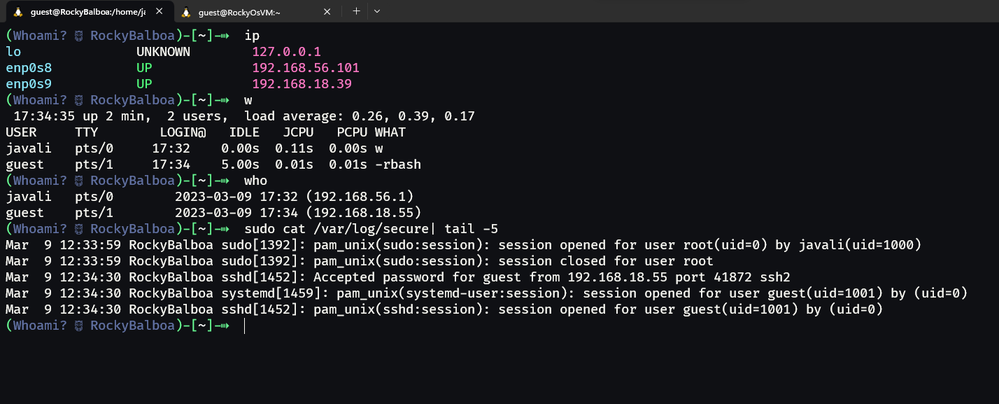

T02 - Acesso Remoto (SSH)
1. Instalação do OpenSSH do cliente
Para este trabalho, iremos usar o Arch(Linux) por WSL2 do Windows. Para instalar o OpenSSH, basta executar o seguinte comando:
yay openssh # O Yay é um AUR Helper. É necessário selecionar a opção respetiva do OpenSSH para instalá-lo.
Neste momento, já se pode usar o comando ssh enquanto cliente para nos conectarmos a um servidor SSH, sem mais configurações.
2. Instalação do OpenSSH do lado do servidor
O OpenSSH no sistema RockyOS vem instalado por defeito. Inclusive, o servidor inicia automaticamente com o sistema.
No entanto, caso o software não estiver instalado, basta executar o seguinte comando:
sudo yum install openssh
Além de o instalar, será necessário ativar o serviço do OpenSSH. Para isso, basta executar o seguinte comando:
systemctl start sshd # Inicia o serviço do OpenSSH
systemctl enable sshd # Indica ao sistema para iniciar o serviço do OpenSSH sempre que o sistema iniciar
Ligação entre o cliente e o servidor
Por fim, para ligar o cliente ao servidor, basta executar o seguinte comando:
# Do lado do cliente (Arch)
ssh javali@192.168.56.101 # ssh <username>@<ip> (porto lógico 22 por defeito)

Após a ligação ser estabelecida, é possível executar comandos arbitrários diretamente no servidor. Conforme o exercício pede, executamos o comando "w". Em vez de "w", costumo usar o comando "who", por permitir ver o IP de origem do terminal (quando não aparece o IP, significa que o terminal está local).
Em Linux, criar um utilizador é bastante simples. Basta executar o seguinte comando em root:
useradd -m -s /bin/bash <username> # useradd -m -s <shell> <username>
Este utilizador terá um diretório home (parâmetro -m) e uma shell atribuida (parâmetro -s). Neste caso, a shell atribuida é o Bash.
Este utilizador irá ter demasiados privilégios para dar-mos o acesso à nossa máquina dentro do nosso curso. E como estamos em Cibersegurança, irei criar um utilizador que unicamente será capaz de executar o comando "ls".
- Para limitar os privilégios, podemos lhe dar uma shell restrita. O Bash tem uma shell restrita, e é possível chamá-lo através do comando bash -r. Porém, o ficheiro "/etc/passwd" não permite que seja dada um parâmetro à shell. Para contornar este problema, podemos criar um link simbólico para o Bash, e dar-lhe o nome de "rbash". O software "bash" entende que, se o seu nome for "rbash", significa que terá de se iniciar em modo restrito.
- Para limitar ainda mais o acesso aos convidados, podemos limitar a variável de ambiente "$PATH", para que a shell não consiga encontrar os comandos normais do Linux. Irei criar uma pasta para colocar os links simbólicos dos comandos que o utilizador poderá executar.
- Afim de controlar o utilizador, irei bloquear a escrita nos seus ficheiros de configuração, para que não possa alterar a sua "$PATH" e reentrar numa nova sessão com acesso aos novos comandos. Além disso, o rbash impede de que as variáveis de ambiente sejam alteradas (apenas leitura).
# Criar o utilizador e atribuir uma password
useradd -m guest
passwd guest # password = guest
# Criar o link para o Bash restrito
ln -s /bin/bash /bin/rbash
# Atribuir a shell restrita ao utilizador
usermod -s /bin/rbash <username>
# Criar a pasta para os links simbólicos e adicionar os comandos que o utilizador poderá executar
mkdir -R /home/guest/.local/bin
ln -s /bin/ls /home/guest/.local/bin/ls
# Criar o ficheiro .bashrc em branco e limitar a variável de ambiente "$PATH"
echo "export PATH=/home/guest/.local/bin" > /home/guest/.bashrc
# Bloquear a escrita nos ficheiros de configuração
cd /home/guest
chmod 444 .* -R # 444 = read-only .* para todos os ficheiros e diretórios ocultos e -R para recursivo
Acesso ao servidor através do utilizador criado
Desta vez, iremos ligar-nos ao servidor através do utilizador que criámos. Irei usar uma ferramenta chamada sshpass para dar a password ao comando ssh. Esta ferramenta é boa para ganhar tempo, mas não é recomendada para ser usada com utilizadores reais, pois a password fica visível no histórico do terminal.
sshpass -p "guest" ssh guest@192.168.56.101
Acesso de utilizadores guest por parte dos camaradas de curso

Mudar o porto lógico de acesso do servidor
O OpenSSH usa o porto lógico 22 por defeito para estabelecer ligações, por ser um porto conhecido. Isto significa que, pessoas mal intencionadas podem tentar conectar-se por esse porto através de bots automatizados. É evidente que um escaneamento exaustivo dos 65535 portos lógicos permita descobrir em que porto o servidor SSH está a correr, mas teria de ser feito manualmente e seria claramente um ataque visado.
Para alterar o porto lógico de acesso ao servidor SSH, bast editar o ficheiro de configurações do OpenSSH, localizado em /etc/ssh/sshd_config. Neste ficheiro, basta alterar a linha "#Port 22" para "Port 4444" (conforme se é pedido no exercício. Poderia ser qualquer porto disponível).
# Alterar o porto lógico de acesso do servidor SSH
sed -i 's/#Port 22/Port 4444/g' /etc/ssh/sshd_config
cat /etc/ssh/sshd_config | grep Port
Port 4444
#GatewayPorts no
# Reiniciar o serviço do OpenSSH
systemctl restart sshd
Job for sshd.service failed because the control process exited with error code.
See "systemctl status sshd.service" and "journalctl -xeu sshd.service" for details.
# Verificar os logs:
journalctl -xeu sshd.service
...
Mar 09 20:30:30 RockyBalboa sshd[2425]: error: Bind to port 4444 on 0.0.0.0 failed: Permission denied.
Mar 09 20:30:30 RockyBalboa sshd[2425]: error: Bind to port 4444 on :: failed: Permission denied.
Mar 09 20:30:30 RockyBalboa sshd[2425]: fatal: Cannot bind any address.
Mar 09 20:30:30 RockyBalboa systemd[1]: sshd.service: Main process exited, code=exited, status=255/EXCEPTION
...
O servidor SSH não consegue iniciar! O erro informa que não temos permissões. Mas como é que isto é possível? Estou a executar os comandos enquanto root...
Após alguma pesquisa, percebi que o sistema operativo Rocky, derivado de RedHat, tem por defeito um mecanismo para atribuir portos a serviços, certamente para impedir que outros portos sejam usados indevidamente.
Para resolver o problema das permissões, precisamos indicar ao sistema que o serviço daemon do SSH irá passar a usar o porto 4444. Precisaremos de uma nova ferramenta, que não vem por defeito no Rocky minimal, e que a sua instalação não é intuitiva, pois a ferramenta pertence a um conjunte de ferramentas chamada policycoreutils-python-utils.
# Instalar a ferramenta semanage
yum install policycoreutils-python-utils
yum provides /usr/sbin/semanage
semanage port -a -t ssh_port_t -p tcp 4444
semanage port -m -t ssh_port_t -p tcp 4444
# Reiniciar o serviço do OpenSSH
systemctl restart sshd

Agora parece estar tudo certo. Mas ao sair e voltar a entrar, não me é possível aceder ao servidor SSH. Além de ter políticas, o Rocky também tem um firewall por defeito, que está a bloquear o acesso ao porto 4444.
# Verificar o estado do firewall
firewall-cmd --state
running
# Alterar as regras do firewall
firewall-cmd --permanent --remove-service=ssh
firewall-cmd --permanent --add-port=4444/tcp
# Reiniciar o firewall
firewall-cmd --reload
Verificação do acesso ao servidor SSH
Após mudar o porto lógico de acesso pelo /etc/ssh/sshd_config para 4444, ter definido as políticas de segurança que o servidor irá trabalhar pelo porto 4444 e ter alterado as regras do firewall para permitir o acesso ao porto 4444, é possível aceder ao servidor SSH com o respetivo parametro -p.
Conclusão
Neste trabalho, demonstrei como é possível limitar um utilizador a uns meros comandos, como instalar e habilitar um servidor SSH, como alterar o porto lógico de acesso ao mesmo. Deparei-me com um problema de permissões devido a políticas de segurança do sistema operativo Rocky e aprendi a resolve-lo, com a ajuda do journal, assim como alterar as regras do firewall também instalado por defeito neste sistema.
- Fontes úteis:
- https://serverfault.com/questions/998399/how-to-create-a-very-limited-linux-user
- https://docs.rackspace.com/support/how-to/change-the-ssh-port-in-centos-and-redhat/
- https://www.digitalocean.com/community/tutorials/additional-recommended-steps-for-new-centos-7-servers